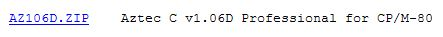
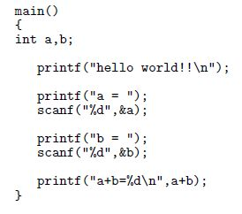
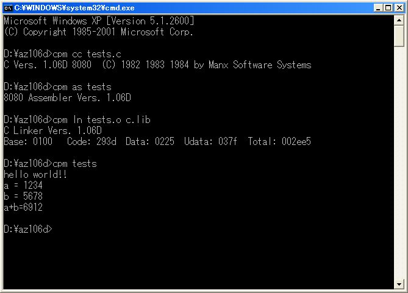
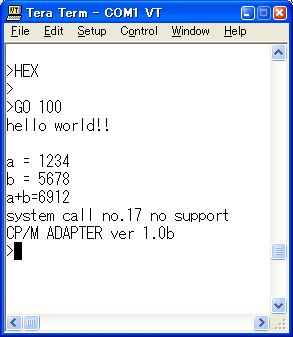
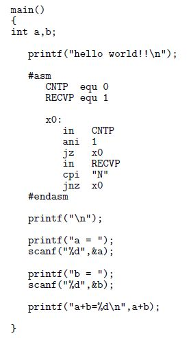
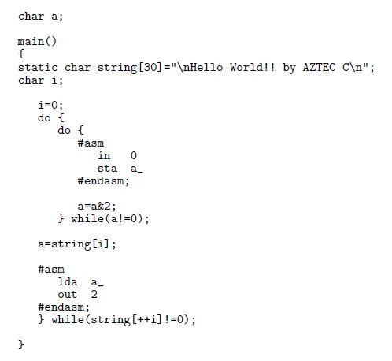
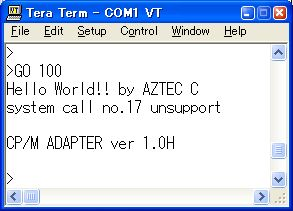

|
Aztec C v1.06D Professional for CP/M-80 |
8080のアセンブリ言語を出力するコンパイラとアセンブラ、リンカを持っています。 CP/M80版には使い方を示すファイルは含まれていませんがCP/M86版のマニュアル があるようなので参考になるかもしれません。
このツールの入手は http://www.retroarchive.org/ の下の所からできます。
|
 |
フリーで配布されていたHITECH-CのCP/M80版は現在(2007.12.25)はサイトから無くなってい るようですから入手可能なCP/M80の標準的なCコンパイラとして取り上げてみます。
|
使い方 |
|
 |
入手した圧縮ファイルを展開してみるとヘッダファイルがひとつもありませんでした。 左の試験用のプログラムも
#include ＜stdio.h＞を書かなくても済みました。
コンパイラが CC.COM 、アセンブラが AS.COM 、リンカが LN.COM です。 これらを下のように CP/Mエミュレータ を使って tests.c の実行プログラムの TESTS.COM を得ます。
|
 |
アセンブラは -L オプションでアセンブルリストを出力します。 リンカは -T オプションでシンボルテーブルを出力します。
|
 |
TESTS.COM
を
BIN2HEX TESTS.COM 100 > TESTS.HEX
でインテルへクスファイルに変換してCPMアダプタの動いているメモリモニタの基板に転送します。
これを実行したものが左です。
最後にファイル操作のシステムコールを発行しているようです。
また本コンパイラの出力するプログラムはコンソールの入力に対してエコーを返さないようなので
通信プログラムの
local echo
を有効にしないと入力する文字が見えなくなります。
|
インラインアセンブラ |
|
 |
8080のアセンブリ言語でのインラインアセンブラが使えます。
左は
hello world!!
の後にコンソールから
"N"
の入力を待って次を続けるプログラムです。
インラインアセンブラの中では
#define
文などで定義された定数は使えないようでした。
|
直接IO操作 |
SMALL C で使ったプログラムを少し変えて書きました。 変えたのは include 文を外したことと、文字列を static にして関数内に戻したことと、インラインアセンブラを 8080 アセンブリ言語の表記にしたことです。
|
 |
このプログラムの大きさは 3.38K バイトでした。
|
 |